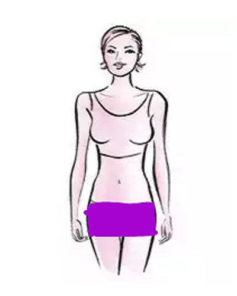

Üçgen (Çilek): Vücudunuz üçgen yani çilek þeklinde ise, geniþ sýrt ve geniþ omuzlara sahipsiniz demektir. Bu beden türlerinde, arkadan erkeksi görünmemeniz için giysi seçimlerinizi
çok dikkatli yapmalýsýnýz. Göðüslerinizin ve omuzlarýnýzýn geniþliðini dengelemek için bakýþlarý aþaðý kaydýrmanýz gerekir. V yakalý veya geniþ yakalý giysiler vücudunuzu en doðru
þekilde bölerek, omuz hatlarýnýzý yumuþatacak ve bedeninize daha dengeli bir görünüm kazandýracaktýr. Bu bedene sahipseniz, ince bacaklarýnýz olmasý çok muhtemeldir. Bu yüzden
bedene yapýþan etekleri, dar paça kot pantolonlarý kullanarak bacaklarýnýzý ön plana çýkarabilirsiniz. Özellikle bu tarz kot ve etekler ile giyeceðiniz topuklu ayakkabýlar bacaklarýnýzý
daha da uzun gösterecektir. Üçgen yani çilek vücutlarda genelde kilo karýn bölgesinden alýnýr. Bu sebeple, bel hattýnýz çok da belirgin olmayabilir. Vücudunuzu saran elbiseler ve
belinize takacaðýnýz ince kemerler, bel hattýnýzý daha çok vurgulayarak, kum saati þeklinde bir görünüþ kazanmanýza yardýmcý olacaktýr. Naomi Campbell, Demi Moore, Teri Hatcher ya
da Renee Zellweger bu vücut þekline örnek olabilir.
|
.jpg)
2.jpg)
3.jpg)